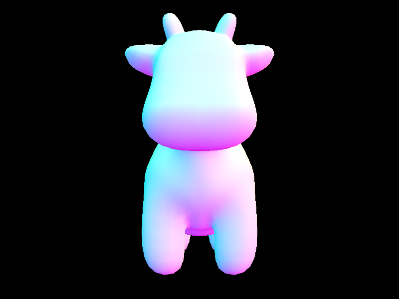

|
|
|
CS 284: Computer Graphics and Imaging, Spring 2022
Project 3-1: Pathtracer 1
Yi-Chen Chen, p3-1-pathtracer-sp22-steak
This site is published at: https://cal-cs184-student.github.io/sp22-project-webpages-ycchentp6/proj3-1/index.html.
Overview
The description of this project can be found here.
In this project, I built a small ray-tracer program that simulates how light rays interact with objects and the world. Topics include ray-scene intersection, material and BRDF, as well as acceleration structures like bounding volume hierarchy.
Part 1: Ray Generation and Scene Intersection
Walk through the ray generation and primitive intersection parts of the rendering pipeline.
Rays can be represented by an origin and a direction. The origin is the starting point of the ray, which is also the position of the camera, and the direction is the vector that points from the camera location to the sampling location. To get the sampling location, we have to correctly transform the normalized (x, y) pixel location in image space to camera space, then to world space.
Now we can generate a ray using Camera::generate_ray(x, y).
We might be sampling multiple points in a pixel, the color of the pixel (x, y) is the integral of radiance over this pixel, averaged by the number of samples.
Now we consider the basics of ray tracing: intersecting with primitives. As mentioned earlier, rays can be represented by an origin and a direction. More specifically, Ray = Origin + t * Direction, where 0 <= t < Inf. I think t could be thought of as time – at time t, where the ray point to. We cap t in between min_t and max_t. Any t outside of this range is invalid as we wouldn’t be able to see things that are infinite far away or behind us. We test if the ray intersects primitives such as a triangle or a sphere. If intersects, we update max_t to be the nearest intersection so that all future intersections that are farther away can be promptly ignored.
Explain the triangle intersection algorithm you implemented in your own words.
I implement the Moller Trumbore Algorithm to check if a ray intersects with a triangle. Details can be found here – it is simple to implement this algorithm! Just define and do the correct math operation for correct variables. After getting t, it is important to check:
If the conditions are satisfied, we are now sure that the ray has intersected with the triangle.
Show images with normal shading for a few small .dae files.
|
|
|
Part 2: Bounding Volume Hierarchy
Walk through your BVH construction algorithm. Explain the heuristic you chose for picking the splitting point.
After completing Part 1, I can render simple scenes. However, rendering slightly more complex scenes is incredibly slow. This is because the simple implementation checks every ray against every object, even if the ray completely missed the object! To speed up the rendering process, we can use the idea of axis-aligned bounding volumes and object partitions, or a bounding volume hierarchy, i.e., build a tree to optimize the runtime speed.
|
|
|||
Visual representation of my BVH on cow.dae.
Show images with normal shading for a few large .dae files that you can only render with BVH acceleration.
|
 |
|||
|
cow.dae (0.2161s) |
beetle.dae (0.1987s) |
||
|
|
|
||
|
maxplanck.dae (0.2985s) |
CBlucy.dae (0.2742s) |
beast.dae (0.1871s) |
|
Compare rendering times on a few scenes with moderately complex geometries with and without BVH acceleration. Present your results in a one-paragraph analysis.
The impact of a BVH on computational efficiency is significant. Without using a BVH, the average number of intersection tests per ray is O(n) while for a BVH the computational complexity is O(logn) where n represents the number of primitives in the scene.
|
Rendering Times (s) |
cow.dae |
beetle.dae |
|
without BVH acceleration |
33.1221 |
44.6218 |
|
with BVH acceleration |
0.2161 |
0.1987 |
** other parameters used: -t 8 -r 800 600
Part 3: Direct Illumination
Walk through both implementations of the direct lighting function.
In this part, I implement two direct lighting estimation methods: uniform hemisphere sampling and importance sampling lights. The estimation of the resulting irradiance is done by using the concept of Monte Carlo Integration.
For both implementations, consider a ray starting at the camera and flowing into the scene. Upon intersecting an object in the scene, the radiance of this intersection point that the camera would observe depends on the Bidirectional Radiance Distribution Function (BRDF) of the object’s surface and the irradiance arriving at the intersection point.
With Uniform Hemisphere sampling, the direction of the explored rays is not guaranteed to point towards the light source. Hence many of the explored rays have no chance of contributing nothing to the reflection equation integral. In contrast, explored rays generated through importance sampling are guaranteed to point in the direction of the light source. These rays are only discounted if there is an obstruction so the overall irradiance is characterized better with the same number of samples.
Show some images rendered with both implementations of the direct lighting function.
|
Uniform Hemisphere Sampling |
Importance Sampling Lights |
|
CBbunny.dae s=16, l=8 |
CBbunny.dae s=16, l=8 |
|
|
|
|
CBbunny.dae s=64, l=32 |
CBbunny.dae s=64, l=32 |
|
CBspheres_lambertian.dae s=16, l=8 |
CBspheres_lambertian.dae s=16, l=8 |
|
CBspheres_lambertian.dae s=64, l=32 |
CBspheres_lambertian.dae s=64, l=32 |
Focus on one particular scene with at least one area light and compare the noise levels in soft shadows when rendering with 1, 4, 16, and 64 light rays (the -l flag) and with 1 sample per pixel (the -s flag) using light sampling, not uniform hemisphere sampling.
|
CBbunny.dae s=1, l=1 |
CBbunny.dae s=1, l=4 |
|
CBbunny.dae s=1, l=16 |
CBbunny.dae s=1, l=64 |
Compare the results between uniform hemisphere sampling and lighting sampling in a one-paragraph analysis.
Uniform hemisphere sampling and light/importance sampling produce very different results. Uniform hemisphere sampling produces more noise because we take samples in all directions around a point. Noise in the renders is significantly reduced when using light/importance sampling because we sample only some rays that actually point towards a light.
Show some images rendered with global (direct and indirect) illumination. Use 1024 samples per pixel.
|
CBbunny.dae s=1024, l=4, m=5 |
CBspheres_lambertian.dae s=1024, l=4, m=5 |
Pick one scene and compare rendered views first with only direct illumination, then only indirect illumination. Use 1024 samples per pixel.
|
zero-bounce only (s=32, l=2, m=5) |
one-bounce only (s=32, l=2, m=5) |
|
direct illumination zero-bounce + one-bounce (s=32, l=2, m=5) |
indirect illumination at least one-bounce only (s=32, l=2, m=5) |
|
global illumination zero-bounce + one-bounce + at least one-bounce (s=32, l=2, m=5) |
|
|
direct illumination zero-bounce + one-bounce (s=1024, l=4, m=5) |
indirect illumination at least one-bounce only (s=1024, l=4, m=5) |
|
global illumination zero-bounce + one-bounce + at least one-bounce (s=1024, l=4, m=5) |
|
For CBbunny.dae, compare rendered views with max_ray_depth set to 0, 1, 2, 3, and 100 (the -m flag). Use 1024 samples per pixel.
|
(s=1024, l=1, m=0) |
(s=1024, l=1, m=1) |
|
(s=1024, l=1, m=2) |
(s=1024, l=1, m=4) |
|
(s=1024, l=1, m=100) |
|
Pick one scene and compare rendered views with various sample-per-pixel rates, including at least 1, 2, 4, 8, 16, 64, and 1024. Use 4 light rays.
|
(s=1, l=4, m=5) |
(s=2, l=4, m=5) |
|
(s=4, l=4, m=5) |
(s=8, l=4, m=5) |
|
(s=16, l=4, m=5) |
(s=64, l=4, m=5) |
|
(s=1024, l=4, m=5) |
|
Pick one scene and render it with at least 2048 samples per pixel. Show a good sampling rate image with clearly visible differences in sampling rate over various regions and pixels. Include both your sample rate image, which shows your how your adaptive sampling changes depending on which part of the image you are rendering, and your noise-free rendered result. Use 1 sample per light and at least 5 for max ray depth.
|
Adaptive Sampling (s=2048, a=64 0.05, l=1, m=5) |
Adaptive Sampling Rate Map (s=2048, a=64 0.05, l=1, m=5) |